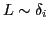
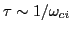
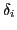
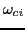
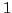

Plasma fluid models have frequently employed single-fluid descriptions of the ion species and often neglect electron physics. While single-fluid models have worked for a number of macroscale applications, a number of applications in fusion as well as space plasma physics require two-fluid descriptions of plasmas. Two-fluid descriptions involve solving the Euler equations for each of the ion and electron species with Maxwell's equations describing the electric and magnetic fields. Two-fluid effects become significant when spatial scales

and temporal scales
with
being the ion skin depth and
being the ion cyclotron frequency. Neglecting electron inertia, neglecting the speed of light, and assuming quasineutrality leads to the more commonly used Hall-MHD model. However, to capture local non-neutral effects accurately, a full two-fluid plasma model is needed.An explicit full two-fluid plasma model has been developed using the discontinuous Galerkin method in the code WARPX (Washington Approximate Riemann Plasma) for applications of plasma shocks, Z-pinches, field reversed configurations, magnetic reconnection, and plasma sheaths to name a few. The explicit implementation has severe time-step restrictions due to the need to resolve the speed of light and the plasma frequencies at every time-step. For simulations with large magnetic fields, the cyclotron frequencies can be very restrictive as well. Additionally higher spatial orders of the explicit discontinuous Galerkin method require more restrictive CFL conditions. Artificial ion-to-electron mass ratios and artificial light speeds are used to obtain results with reasonable computational effort when using an explicit two-fluid plasma model. This provides the motivation for a semi-implicit implementation which would allow the use of realistic parameters and geometries. The ion fluid is solved explicitly due to the need to resolve ion physics as a minimum, while the restrictive operators in the electron equations and Maxwell's equations are evolved implicitly. Due to the stiff nature of the equations, physics-based preconditioners need to be employed with Jacobian-free Newton-Krylov (JFNK) nonlinear solvers.
A

-D, single-fluid, electrostatic electron fluid description is studied first for simplicity. This system is solved using several methods namely, using JFNK solvers, using physics-based linearized semi-implicit solvers, and using physics-based preconditioners with JFNK. The method of manufactured solutions is used to artificially create a problem with large time-scale separation. Once this is tested, it will be extended to a two-fluid description by including explicit solutions of an ion fluid. Picard iterations are expected to be used to couple the implicit and explicit solutions and obtain higher order accuracy. Results will be presented using a semi-implicit single-fluid description with the method of manufactured solutions. Additionally, two-fluid electrostatic solutions of the ion acoustic shock wave are expected to be presented.